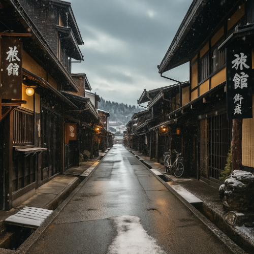

Takayama – A Charming Traditional Town in Gifu Prefecture
Takayama (高山) is a beautifully preserved town located in the mountainous Hida region of Gifu Prefecture. Known for its well-maintained Edo-era streets, Takayama offers a charming glimpse into Japan’s past, with traditional wooden houses, lively markets, and annual festivals that attract visitors from all over the world.
Explore Takayama’s Historic Old Town
Takayama’s Old Town is one of Japan’s best-preserved historical districts. Stroll along the narrow streets lined with traditional merchant houses, shops, and sake breweries. The district retains its Edo-period charm and is perfect for those who want to experience the feeling of old Japan. Don’t miss the famous Sannomachi Street, where you can find local crafts, fresh produce, and the town's famous sake.
Takayama’s Vibrant Festivals
Takayama is home to two of Japan’s most famous festivals, the Takayama Spring Festival and Takayama Autumn Festival. These festivals feature ornate floats, traditional music, and stunning parades. Held in April and October, they attract thousands of visitors who come to see the beautifully decorated floats that are pulled through the town’s streets in elaborate processions.
Scenic Views of the Japanese Alps
Takayama is surrounded by the majestic Japanese Alps, providing visitors with breathtaking views of the mountains. Whether you're hiking in the summer or enjoying the snowy landscapes in winter, Takayama’s natural beauty is a major highlight. Be sure to visit the Shiroyama Park for panoramic views of the town and the surrounding mountains.
How to Get to Takayama
- 🌸 From Nagoya: Take the JR Hida Limited Express to Takayama Station (approx. 2.5 hours)
- 🌸 From Tokyo: Take the Shinkansen to Nagoya, then transfer to the JR Hida Limited Express to Takayama (approx. 4 hours)
- 🌸 Direct access from Takayama Station to the Old Town (a 10-minute walk)
- 🌸 Opening hours: Most attractions are open year-round, but the festivals are held in April and October
- 🌸 Best photo spots: The Old Town, Takayama’s scenic parks, festival floats, and the surrounding mountains
Why Takayama is a Must-Visit for Japan Travelers
With its blend of traditional culture, historical architecture, vibrant festivals, and stunning natural beauty, Takayama is a hidden gem in Japan. Whether you're a history enthusiast, a culture lover, or simply seeking a peaceful escape into nature, Takayama is the perfect destination to experience authentic rural Japan.
Tags: Takayama, Gifu Prefecture, Japan historical towns, Takayama Festival, Edo-era streets, Japanese Alps, traditional towns Japan, Hida region
Planning to visit Takayama?
To get the most immersive and insightful experience, we recommend booking a certified local private guide from our team. All our guides are licensed professionals officially recognized by the Japanese government, offering personalized tours tailored to your interests. Please contact your selected guide in advance to confirm availability and get expert assistance for your trip.